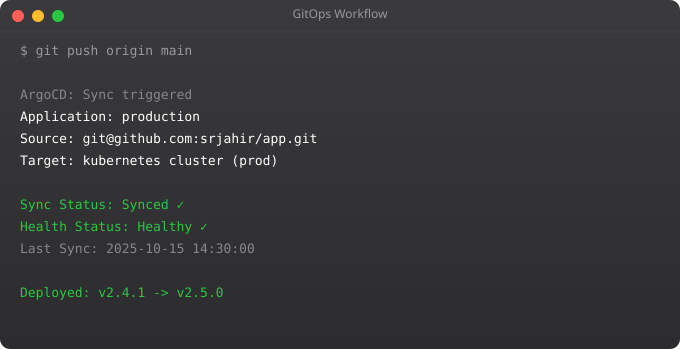

Modern DevOps is cloud DevOps. Whether you are deploying applications, managing infrastructure, or building CI/CD pipelines, you are doing it on a cloud platform. AWS, GCP, and Azure together serve the overwhelming majority of cloud workloads worldwide. Understanding their core services and how they map to DevOps workflows is essential for any modern DevOps engineer.
AWS (Amazon Web Services) is the market leader with the most services, the largest community, and the deepest enterprise adoption. If you learn one cloud platform, AWS is the highest-return choice for employability. It has services for literally everything — computing, storage, databases, AI/ML, IoT, and more.
GCP (Google Cloud Platform) excels in data analytics, machine learning, and Kubernetes (Google invented Kubernetes). Organizations doing heavy data work or using Google's AI services gravitate toward GCP.
Azure is Microsoft's cloud and dominates in organizations already using Microsoft products — Windows servers, Active Directory, Office 365. It integrates seamlessly with the Microsoft ecosystem.
# Compute
EC2 → Virtual servers (equivalent: GCP Compute Engine, Azure VMs)
ECS/EKS → Container orchestration (Docker/Kubernetes)
Lambda → Serverless functions
# Storage
S3 → Object storage (files, backups, static websites)
EBS → Block storage (attached to EC2, like a hard drive)
EFS → Managed NFS file system
# Database
RDS → Managed relational databases (MySQL, PostgreSQL, etc.)
DynamoDB → Managed NoSQL database
ElastiCache → Managed Redis/Memcached
# Networking
VPC → Virtual network
Route 53 → DNS management
CloudFront → CDN (content delivery network)
ALB/NLB → Load balancers
# DevOps specific
CodePipeline → CI/CD pipelines
ECR → Container registry (private Docker registry)
CloudWatch → Monitoring, logs, and alerting
CloudTrail → Audit log of all API calls
Systems Manager → Remote server management# Principle of Least Privilege: give only permissions actually needed
# Never use root account for daily work
# Create individual IAM users or use roles
# Check your IAM identity
aws sts get-caller-identity
# Create a basic IAM policy (JSON)
{
"Version": "2012-10-17",
"Statement": [
{
"Effect": "Allow",
"Action": ["s3:GetObject", "s3:PutObject"],
"Resource": "arn:aws:s3:::my-bucket/*"
}
]
}
# Never hardcode AWS credentials in code
# Use IAM roles for EC2 instances
# Use environment variables for local development:
export AWS_ACCESS_KEY_ID=your-key
export AWS_SECRET_ACCESS_KEY=your-secret
export AWS_DEFAULT_REGION=ap-south-1# Install
pip install awscli
# Configure
aws configure
# EC2 instances
aws ec2 describe-instances
aws ec2 start-instances --instance-ids i-1234567890
aws ec2 stop-instances --instance-ids i-1234567890
# S3 operations
aws s3 ls # list buckets
aws s3 ls s3://my-bucket # list objects
aws s3 cp file.txt s3://my-bucket/ # upload
aws s3 sync ./local-dir s3://my-bucket/ # sync directory
# CloudWatch logs
aws logs describe-log-groups
aws logs tail /aws/ec2/my-app --followCloud bills can spiral unexpectedly. Key practices: set billing alerts in AWS Budgets, use reserved instances for predictable workloads (up to 70% savings), stop dev/test instances when not in use, use S3 lifecycle policies to move old data to cheaper storage tiers, and regularly audit unused resources with AWS Trusted Advisor.
In Part 12, the final part, we will bring everything together into a complete DevOps project — from code to cloud, with full CI/CD, monitoring, and infrastructure as code.
AWS, GCP, and Azure are the three major cloud platforms, each with distinct strengths. AWS has the largest market share, the broadest service catalog, and the largest talent pool — if you only learn one cloud, AWS is the pragmatic choice for career breadth. GCP has strong advantages in data analytics (BigQuery), machine learning (Vertex AI), and Kubernetes (GKE is the most mature managed Kubernetes service, which makes sense given Google invented Kubernetes). Azure dominates in enterprises that are already invested in Microsoft products — Active Directory integration, Windows workloads, and Microsoft 365 make Azure the natural choice in those environments. For DevOps work, the core concepts transfer across providers — learn one well, and adapting to another takes weeks rather than months.
A key architectural decision in cloud environments is whether to use cloud-native proprietary services or managed versions of open-source tools. AWS SQS (proprietary) versus AWS MSK (managed Kafka) versus running Kafka on EC2 — each has different cost, operational, and portability implications. Cloud-native services like SQS are simpler to operate and integrate naturally with other cloud services, but create vendor lock-in. Managed open-source services like RDS for PostgreSQL give you a standard interface with reduced operational burden but at higher cost than self-managed. Self-managed open source gives maximum control and minimum cost at scale, but maximum operational burden. The right choice depends on your team's operational capacity and your organization's tolerance for vendor lock-in.
On the cloud provider of your choice, use the free tier to deploy a simple three-tier architecture: a compute instance running a web application, a managed database service (RDS, Cloud SQL, or Azure Database), and an object storage bucket for static assets. Configure security groups or firewall rules so the web server can reach the database but the database is not publicly accessible. Deploy a simple application and verify end-to-end connectivity. Calculate the estimated monthly cost using the provider's pricing calculator.
DevOps is not a destination but a continuous journey of improvement. The practices covered here — automation, monitoring, infrastructure as code, CI/CD pipelines — are tools in service of a deeper goal: enabling teams to deliver software changes to production quickly, safely, and reliably. The measurement that matters is not which tools you use but how long it takes to go from a committed code change to running in production, and how confident you are in that process. The best DevOps teams measure their deployment frequency, lead time for changes, change failure rate, and mean time to recovery (the DORA metrics), and treat these as engineering objectives to improve over time.